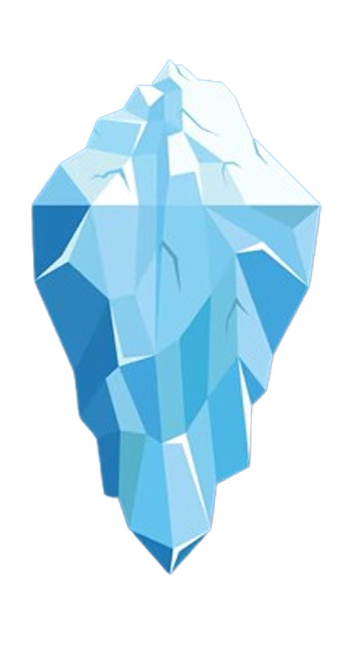

O futuro é
Biológico.
Fim do envelhecimento
Longevidade avançada.
A ciência vai parar de focar apenas em remediar doenças para agir na reversão celular, estendendo a juventude e a expectativa de vida com saúde total.
O DNA como HD
Armazenamento de dados.
Esqueça os servidores convencionais. O futuro do armazenamento de dados é biológico, onde um único grama de DNA pode guardar petabytes de informação por milênios.
Bioimpressão 3D
Órgãos sob demanda.
A bioimpressão 3D vai zerar as filas de transplante. Tecidos e órgãos inteiros serão cultivados a partir das suas próprias células, eliminando qualquer risco de rejeição.
Materiais vivos
Engenharia de materiais.
A engenharia do futuro usará organismos programados no nível molecular para criar materiais sustentáveis e despoluir o meio ambiente.
Mergulhe na Biotecnologia.
